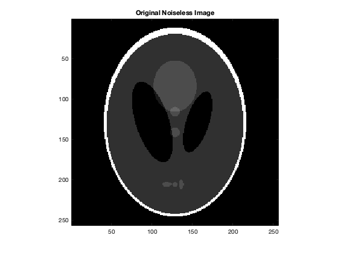
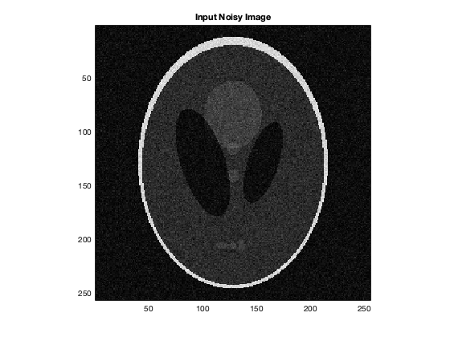
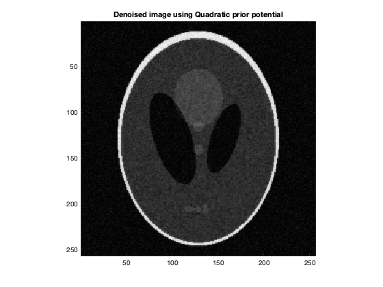
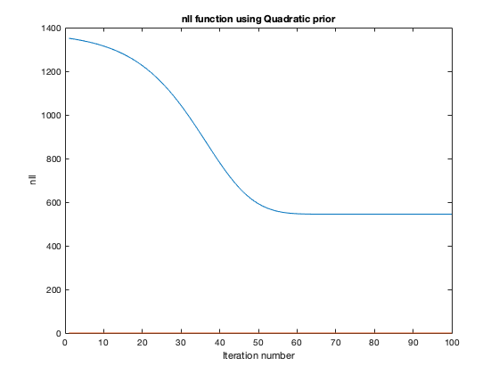
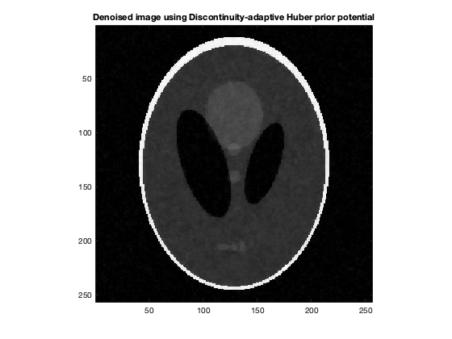
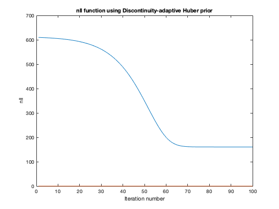
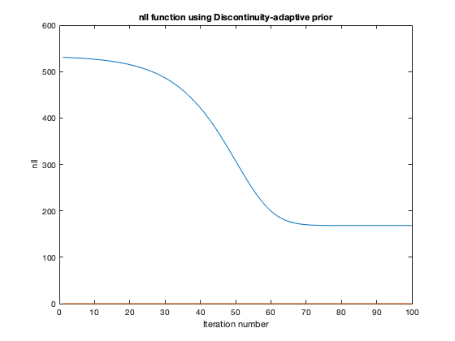

Contents
Loading and Visualizing the images
data = load('../data/assignmentImageDenoisingPhantom.mat');
im = data.imageNoisy;
im_orig = data.imageNoiseless;
fprintf('RRMSE = %f\n', rrmse(im,im_orig));
printImage(im_orig,'Original Noiseless Image');
printImage(abs(im),'Input Noisy Image');
RRMSE = 0.282996
 
MRF Potential: Quadratic
alphaOptimal = 0.215;
[im_r_op, nllHistory] = denoise(im,'q',alphaOptimal);
fprintf('Optimal alpha=%f, RRMSE = %f\n\n', alphaOptimal, rrmse(im_orig, im_r_op));
for alpha=[0.8*alphaOptimal, min(1.2*alphaOptimal,1)]
[im_r, ~] = denoise(im,'q',alpha);
fprintf('RRMSE (alpha=%f) = %f\n', alpha, rrmse(im_orig, im_r));
end
printImage(abs(im_r_op),'Denoised image using Quadratic prior potential');
figure;
plot(nllHistory);
title('nll function using Quadratic prior');
xlabel('Iteration number');
ylabel('nll');
Optimal alpha=0.215000, RRMSE = 0.210079
RRMSE (alpha=0.172000) = 0.212302
RRMSE (alpha=0.258000) = 0.211556
 
MRF Potential: Discontinuity-adaptive Huber
alphaOptimal = 0.78;
gammaOptimal = 0.03;
[im_r_op, nllHistory] = denoise(im,'h',alphaOptimal,gammaOptimal);
fprintf('Optimal alpha=%f, Optimal gamma=%f RRMSE = %f\n\n', alphaOptimal, gammaOptimal, rrmse(im_orig, im_r_op));
for alpha=[0.8*alphaOptimal, min(1.2*alphaOptimal,1)]
[im_r, ~] = denoise(im,'h',alpha,gammaOptimal);
fprintf('RRMSE (alpha=%f) = %f\n', alpha, rrmse(im_orig, im_r));
end
fprintf('\n');
for gamma=[0.8*gammaOptimal, 1.2*gammaOptimal]
[im_r, ~] = denoise(im,'h',alphaOptimal,gamma);
fprintf('RRMSE (gamma=%f) = %f\n', gamma, rrmse(im_orig, im_r));
end
printImage(abs(im_r_op),'Denoised image using Discontinuity-adaptive Huber prior potential');
figure;
plot(nllHistory);
title('nll function using Discontinuity-adaptive Huber prior');
xlabel('Iteration number');
ylabel('nll');
Optimal alpha=0.780000, Optimal gamma=0.030000 RRMSE = 0.083690
RRMSE (alpha=0.624000) = 0.130231
RRMSE (alpha=0.936000) = 0.122246
RRMSE (gamma=0.024000) = 0.084150
RRMSE (gamma=0.036000) = 0.086803
 
MRF Potential: Discontinuity-adaptive
alphaOptimal = 0.78;
gammaOptimal = 0.04;
[im_r_op, nllHistory] = denoise(im,'d',alphaOptimal,gammaOptimal);
fprintf('Optimal alpha=%f, Optimal gamma=%f RRMSE = %f\n\n', alphaOptimal, gammaOptimal, rrmse(im_orig, im_r_op));
for alpha=[0.8*alphaOptimal, min(1.2*alphaOptimal,1)]
[im_r, ~] = denoise(im,'d',alpha,gammaOptimal);
fprintf('RRMSE (alpha=%f) = %f\n', alpha, rrmse(im_orig, im_r));
end
fprintf('\n');
for gamma=[0.8*gammaOptimal, 1.2*gammaOptimal]
[im_r, ~] = denoise(im,'d',alphaOptimal,gamma);
fprintf('RRMSE (gamma=%f) = %f\n', gamma, rrmse(im_orig, im_r));
end
printImage(abs(im_r_op),'Denoised image using Discontinuity-adaptive prior potential');
figure;
plot(nllHistory);
title('nll function using Discontinuity-adaptive prior');
xlabel('Iteration number');
ylabel('nll');
Optimal alpha=0.780000, Optimal gamma=0.040000 RRMSE = 0.109118
RRMSE (alpha=0.624000) = 0.155749
RRMSE (alpha=0.936000) = 0.165158
RRMSE (gamma=0.032000) = 0.111237
RRMSE (gamma=0.048000) = 0.110224
